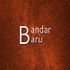

Oh Hai! :)
Saya juga bingung mau meletakkan informasi apa di static web ini, hahaha.
Okey, nama saya Bandar Baru usia 25 dari Indonesia. Salam kenal semuanya. :)
Karena saya juga masih nyari cara atau ide untuk meletakkan informasi menarik di static web ini, untuk sementara begini aja dulu yak, sambil nanti coba eksplor dan mempelajari penggunaan static web generator yang bisa mengubah static web menjadi blog pribadi.
Atau mungkin ya sudah belajar HTML & CSS dengan bermain-bermain sama template, hahaha nanti saya lihat saja kedepannya.
Yep, template website ini "nyomot" dari internet, tapi setidaknya bisa melatih diri juga untuk berkutat pada permainan coding HTML & CSS.
Okey, selebihnya ikuti saja saya di Mastodon. See you. ❤️
Tentang saya
-

@bandarbaru_1
He/Him 25 years old from Indonesia.